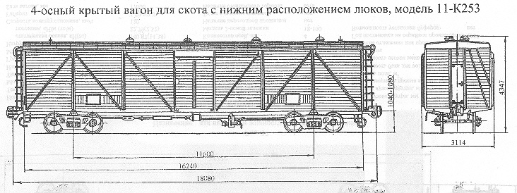

Назначение: для перевозки живности на дальные расстояния
Параметры
| Номер проекта | 64.00.000-01 |
| Технические условия | |
| Модель вагона | 11-К253 |
| Тип вагона | 966 |
| Изготовитель | АВЗ |
| Грузоподъемность, т | 22 |
| Масса тары вагона, т | 24,248 |
| Нагрузка: статическая осевая, кН(тс) |
113,68(11,6) |
| погонная, кН/м(тс/м) | 25,97(2,65) |
| Скорость конструкционная, км/ч | 100 |
| Габарит | 1-Т |
| База вагона, мм | 11600 |
| Длина, мм: по осям сцепления автосцепок |
18080 |
| по концевым балкам рамы (длина рамы) | 16240 |
| Ширина максимальная, мм | 3114 |
| Высота от уровня верха головок рельсов, мм: максимальная |
4347 |
| до уровня пола | 1265 |
| Количество осей, шт. | 4 |
| Модель 2-осной тележки | 18-100 |
| Наличие переходной площадки | нет |
| Тоже с ручным тормозом | нет |
| Наличие стояночного тормоза | нет |
| Объем кузова, м³ | 122 |
| Длина кузова внутри, мм | 16160 |
| Ширина кузова внутри, мм | 2750 |
| Высота грузового помещения от пола до потолка,мм | 2704 |
| Длина грузового помещения,мм | 16160 |
| Размеры дверного проема в свету, мм | 1830х2136 |
| Площадь пола,м² | 45,1 |
| Вместимость бака для воды, л | 1300 |
| Вместимость вагона максимальная, голов крупного рогатого скота | 20-22 |
| Наличие отделения для проводника | нет |
| Год постановки на серийное производство | 1956 |
| Возможность установки буферов | нет |